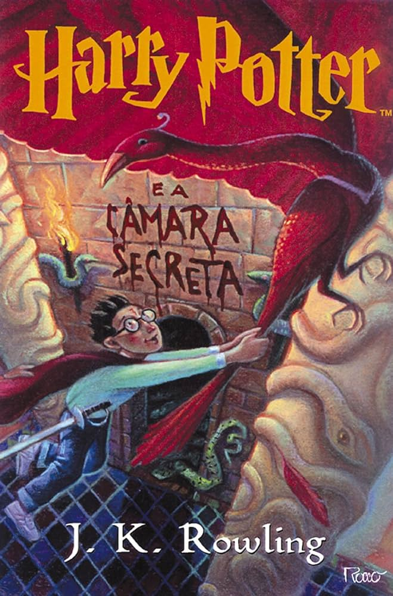

Livros Harry Potter

Harry Potter e a Pedra Filosofal
Harry Potter e a Pedra Filosofal é o primeiro dos sete livros da série de fantasia Harry Potter, escrita por J. K. Rowling. O livro conta a história de Harry Potter, um órfão criado pelos tios que descobre, em seu décimo primeiro aniversário, que é um bruxo.

Harry Potter e a Câmara Secreta
Depois de férias aborrecidas na casa dos tios trouxas, está na hora de Harry Potter voltar a estudar. Coisas acontecem, no entanto, para dificultar o regresso de Harry. Persistente e astuto, o herói não se deixa intimidar pelos obstáculos e, com a ajuda dos fiéis amigos Weasley, começa o ano letivo na Escola de Magia e Bruxaria de Hogwarts. As novidades não são poucas. Novos colegas, novos professores, muitas e boas descobertas e um grande e perigosos desafio. Alguém ou alguma coisa ameaça a segurança e a tranquilidade dos membros de Hogwarts.
Harry Potter e o Prisioneiro de Azkaban
As aulas estão de volta à Hogwarts e Harry Potter não vê a hora de embarcar no expresso a vapor que o levará de volta à escola de bruxaria. Mais uma vez suas férias na rua dos Alfeneiros foi triste e solitária. Com muita ação, humor e magia, 'Harry Potter e o prisioneiro de Azkaban' traz de volta o gigante atrapalhado Rúbeo Hagrid, o sábio diretor Alvo Dumbledore, a exigente professora de transformação Minerva MacGonagall e o novo mestre Lupin, que guarda grandes surpresas para Harry.

Harry Potter e o Cálice de Fogo
Harry é escolhido pelo Cálice de Fogo para competir como um dos campeões de Hogwarts, tendo ao lado seus fiéis amigos. Muitos desafios, feitiços, poções e confusões estão reservados para Harry. Além disso, ele terá que lidar ainda com os problemas comuns da adolescência - amor, amizade, aceitação e rejeição.

Harry Potter e a Ordem da Fênix
Harry está em seu quinto ano em Hogwarts. Ele acaba ouvindo que muitos não sabem a verdade sobre seu encontro com Lord Voldermort. O Ministro de Mágica, Cornelius Fudge, indica Dolores Umbridge para ser a nova professora de Defesa contra as Artes das Trevas, por acreditar que Dumbledore planeja tomar seu lugar.
Harry Potter e o Enigma do Príncipe
Harry pega emprestado da sala de Poções um livro que pertencia ao "Príncipe Mestiço" e continha inúmeros "macetes" para otimizar a preparação de poções e alguns feitiços "inventados". Assim, Harry se torna o melhor aluno da turma de Horácio Slughorn, até melhor que Hermione.
Harry Potter e as Relíquias da Morte
Prestes a completar 17 anos, Harry Potter precisa ser transportado da casa dos seus tios, os Dursley, até um local seguro. Lorde Voldemort e seus comensais da morte sabem que a transferência está prestes a acontecer e aguardam sua realização para atacar.